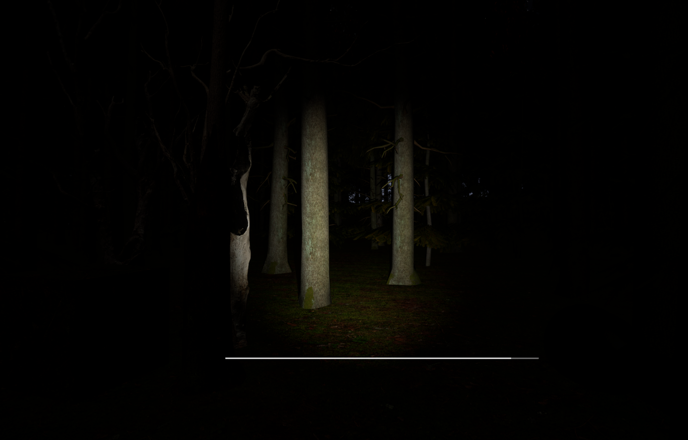

Розробка хоррор-гри на рушії Unreal Engine 5
Development of a Horror Game Using Unreal Engine 5
Короткий опис
Гра натхненна розповідями з українського фольклору про Блуда. Злий дух збиваючий людей з дороги, заводячи їх в далекі від людей місця. Гравець повинен проходити гру, збираючи записки з підказками та уникаючи ворожих NPC на процедурно згенерованій карті. Гра буде розрахована на, приблизно, хвилин 30. Можливості зберегти прогрес немає, тож гру прийдеться проходити відразу у режимі хардкор. Окрім неігрових персонажів які будуть заважати гравцеві пройти гру, також будуть в різних місцях росташовані скримери, для більш страшної атмосфери.
Вибрана стратегія: Git Flow
- main — стабільна продуктивна версія
- develop — актуальний стан розробки
- feature/* — для реалізації нових функцій
- release/* — для підготовки релізу
- hotfix/* — для термінових виправлень
Ключові слова
Unreal Engine 5, AI, генерація карти, хоррор, NPC, геймдизайн
Мета дослідження
Створити хоррор-гру з процедурною генерацією карти, штучним інтелектом для NPC та скриптом для створення записок з підказками
Основні завдання
- Реалізувати генерацію карти
- Реалізувати ШІ для NPC
- Додати систему підказок
- Реалізувати головне та пауз-меню
- Додати звукове оформлення
Очікувані результати
Готова гра з інтерактивними елементами, динамічним світом і можливістю демонстрації ШІ поведінки NPC.
Контактна інформація
Telegram: @default57392
GitHub: github.com/default868
Візуальні матеріали
